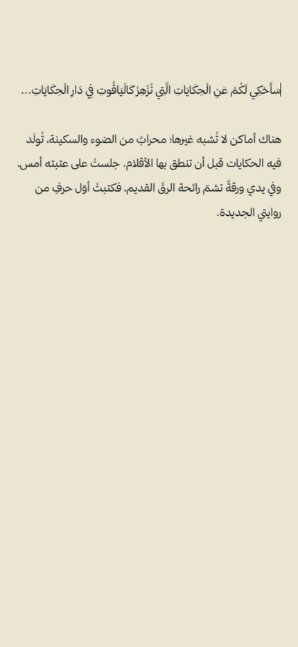
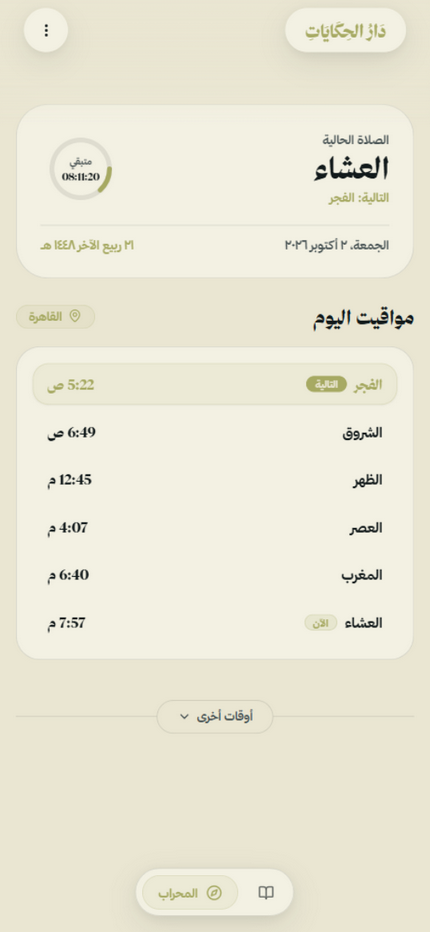
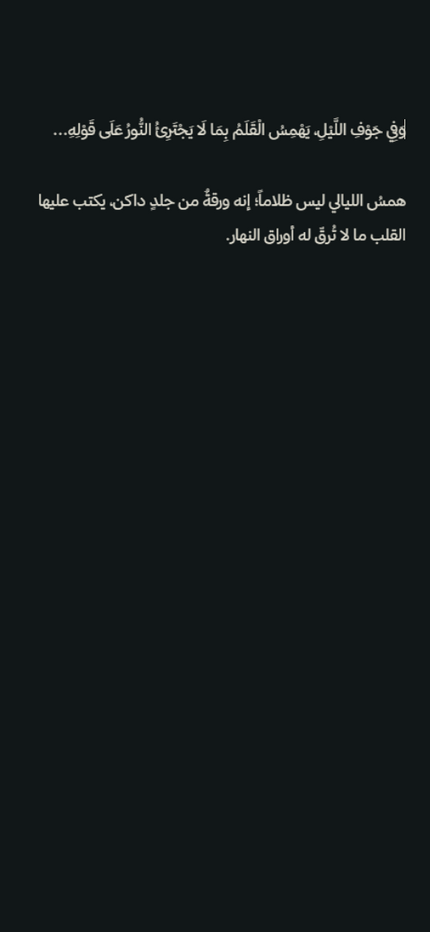
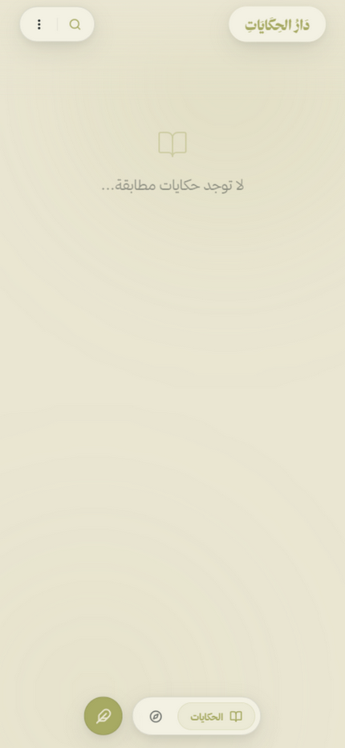
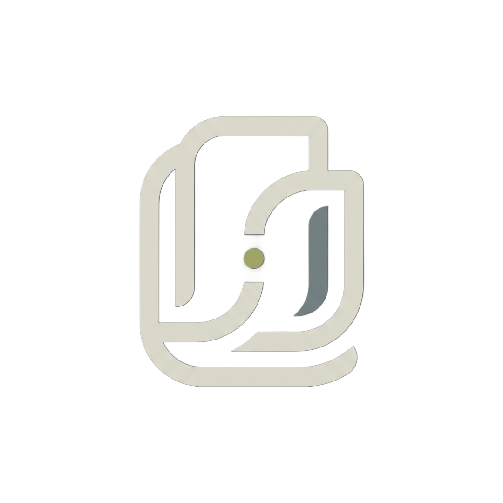

المِحراب
محرّر أدبيّ بقالب النشر الحرفيّ
كتابةٌ بتشكيلٍ كامل عبر معالجة تشكيل مخصّصة، وضبطٌ للسطر والحرف والورق كأنك تكتب على رقّ أصيل — مع تراجع وإعادة وحفظٍ تلقائيّ لا يُفقد حرفاً واحداً.
مِحرابٌ مقدّس لفنّانة السرد — مِنصّة الكتابة الخاصة بالكاتبة رحمه السيد موافي؛ محرّرٌ أدبيّ حرفيّ بخطوط ثمانية، يتقرّب فيها القلم مع مواقيت الصلاة، وتُحفَظ الحكايات بخصوصيةٍ تامّة.




«ليست منصّةً تُكتب فيها النصوص فقط؛ إنها مِحرابٌ تتآلف فيه الروح مع الحرف، فتُولَد الحكاية من سُكينة المكان قبل أن تُولَد من الفكرة.»
— من فلسفة دَارِ الحِكَايَاتِ
كتابةٌ بتشكيلٍ كامل عبر معالجة تشكيل مخصّصة، وضبطٌ للسطر والحرف والورق كأنك تكتب على رقّ أصيل — مع تراجع وإعادة وحفظٍ تلقائيّ لا يُفقد حرفاً واحداً.
من رقّ «كلاسيكيّ ملكيّ» الصافي، إلى ظلام «همس الليالي» الدافئ، إلى سواد أنيقٍ بلا زوائد.
مواقيت صلاة دقيقة في 58 مدينة بـ5 طرق حسابٍ معتمدة، مع منبّهاتٍ أصلية تعمل دون اتصال.
تصديرٌ بقالب الإنتاج الحرفيّ — صفحة عنوان، وفهرس، وتزيين نصّيّ بمواصفات النشر الحقيقية. ملفّات Word بصيغة docx قابلة للتحرير، جاهزة للمطابع أو المدقّقين.
حكاياتك تُخزَّن محليّاً على جهازك، وتُقفل ببصمتك أو بوجهك. لا سحابة، لا رؤية مسبقة — الكلمة مِلكُ قلمها.
وكيل سرديّ مبنيّ على Gemini يقرأ أسلوبك ويقترح تطوير المشاهد والحوارات، مع «محركّ تبديد الحكايات» الذي يمسح ما انتهيت منه بهدوء. أسئلة إبداعية، لا إنشاء بديل — فالكاتب أنت.
خطّ بخطّك على الشاشة، وممحاة تقريب تَمحو الحرف لا السطر — لتوقيع الحكاية بحضورك.

مجاني، مفتوح المصدر، يعمل دون اتصال — على أندرويد وفي متصفّحك مباشرة.